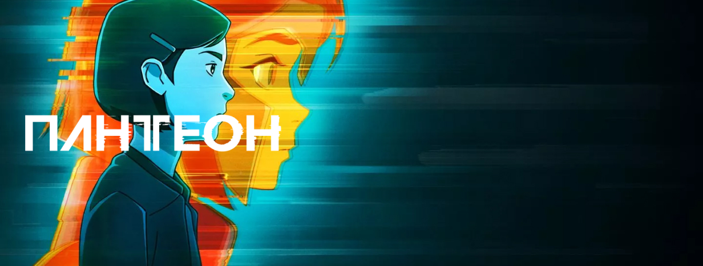

Ходячие мертвецы: Выжившие(18+)
/Сериал Сезоны: 1
О сериале
Описание
Мишонн узнает, что ее муж Рик Граймс, который пропал без вести, всё же жив и взят в плен бойцами Гражданской республики. Женщина вооружается катаной и отправляется на его поиски, по пути уничтожая толпы голодных зомби.
Трейлер

Финал сезона уже доступен к просмотру. Узнайте, чем закончилась история воительницы Мишонн (Данай Гурира) и ее мужа Рика Граймса (Эндрю Линкольн)
- 
Смотрите все серии фантастического анимационного сериала с элементами киберпанка, основанного на рассказах китайско-американского писателя Кена Лю

Фантастический сериал с Чиветелем Эджиофором («12 лет рабства», «Доктор Стрэндж») и Наоми Харрис («28 дней спустя», серия фильмов о Джеймсе Бонде)

Что будет, если объединить комедию и ужасы? Сериал «Стэн против сил зла»!

Криминальная драма о водителе такси, который вынужден курсировать не только между разными точками на карте, но и между добрыми и злыми поступками.

Драматический триллер о группе школьниц, которые выжили в лесу после авиакатастрофы, продолжается во втором сезоне